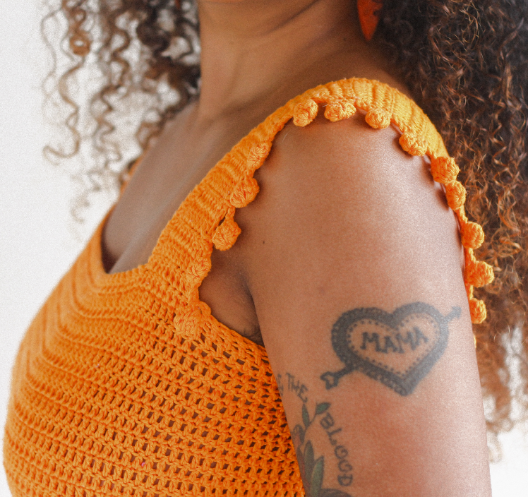
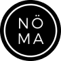

O QUE É A NÖMA NO MUNDO DO HANDMADE?
NöMA vem de uma necessidade, uma urgência de criar, todos os dias. Graças às influências femininas que tenho comigo, desde muito pequena respiro arte. Sem perceber, me encontro nesse emaranhado há anos - literalmente. E enquanto crocheteira e tricoteira há 20 anos, NöMA se tornou a materialização de um projeto pessoal, onde consigo ressignificar muito de mim mesma. Espero que esse espaço seja não só um modo de fazer com o que eu faço chegue até você, mas também como um lugar de inspiração, aprendizado e troca.